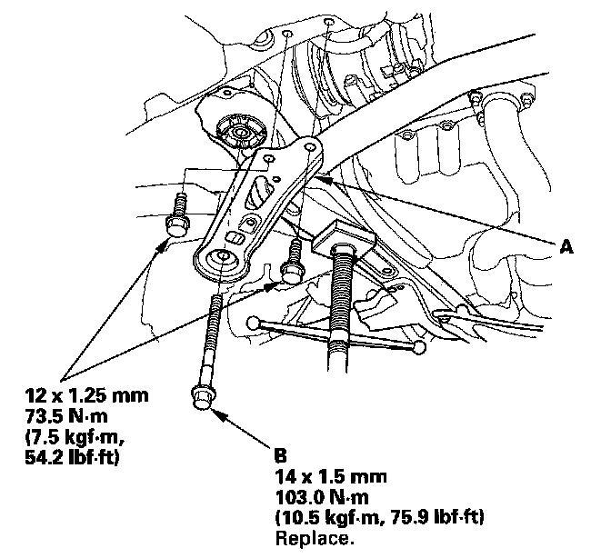
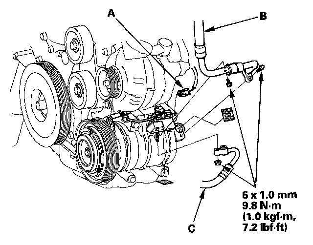
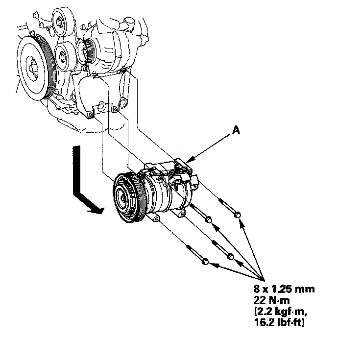

Compressor HVAC: Service and Repair
A/C Compressor ReplacementNOTE: Do not install the A/C compressor into a system unless you are completely sure that the system is free of contamination. Installing the A/C compressor into a contaminated system can result in premature A/C compressor failure.
1. If the A/C compressor is marginally operable, run the engine at idle speed, and let the air conditioning work for a few minutes, then shut the engine off.
2. Recover the refrigerant with a recovery/recycling/charging station.
3. Remove the drive belt.
4. Remove the front splash shield.
5. Remove the front undercover.

6. Support the front subframe with the engine support. Remove the bolts and the front subframe stiffener (A).
NOTE: Install the new front subframe mounting bolt (B).

7. Disconnect the A/C compressor clutch connector (A). Remove the bolts and the nut, then disconnect the suction hose (B) and discharge hose (C) from the A/C compressor. Plug or cap the lines immediately after disconnecting them to avoid moisture and dust contamination.

8. Remove the mounting bolts and the A/C compressor (A). Be careful not to damage the radiator fins when removing the compressor.
9. Install the A/C compressor in the reverse order of removal, and note these items:
- Inspect the A/C lines for any signs of contamination.
- If you're installing a new A/C compressor, you must calculate the amount of refrigerant oil to be removed from it. A new A/C compressor comes with a full charge of oil.
- Replace the O-rings with new ones at each fitting, and apply a thin coat of refrigerant oil before installing them. Be sure to use the correct O-rings for HFC-134a (R-134a) to avoid leakage.
- Use refrigerant oil (DENSO ND-OIL 8) for HFC-134a DENSO piston type A/C compressor only.
- To avoid contamination, do not return the oil to the container once dispensed, and never mix it with other refrigerant oils.
- Immediately after using the oil, reinstall the cap on the container, and seal it to avoid moisture absorption.
- Do not spill the refrigerant oil on the vehicle; it may damage the paint; if the refrigerant oil contacts the paint, wash it off immediately.
- Be careful not to damage the radiator fins when installing the compressor and the A/C condenser fan shroud.
- Charge the system.